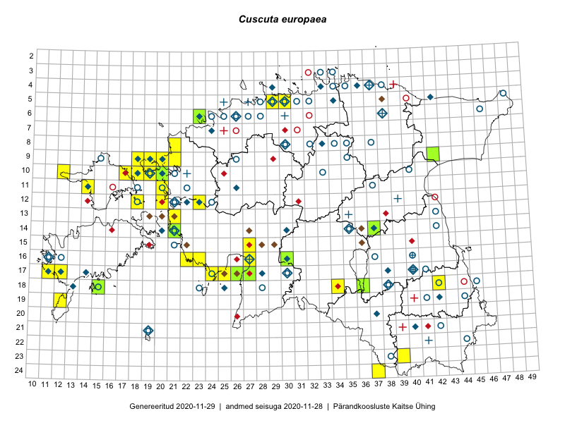

Cuscuta europaea
Uuendatud: 2016-12-02
Kaardile koondatud taksonid: Cuscuta europaea L.

Kaart põhineb 26 vaatlusel. Taksonit on leitud 21 ruudust.
Kuvatud viited 20 esimesele andmebaasikirjele, ülejäänud PlutoFis
- Ott Luuk: 2014-07-24: 12-20: ala
- Indrek Tammekänd, Vilma Kuusk: 2015-08-30: 16-22: GPS punkt
- Rein Kalamees, Kersti Püssa: 2015-06-28: 13-21: ala
- Maret Gerz, Leena Gerz: 2015-08-08: 17-25: ala
- Maret Gerz, Leena Gerz: 2015-08-16: 16-23: ala
- Maret Gerz, Leena Gerz: 2015-08-12: 17-24: ala
- Meeli Mesipuu: 2015-06-17: 16-27: ala
- Ott Luuk, Peedu Saar: 2014-07-29: 10-20: ala
- Toomas Kukk, Tiit Hallikma: 2016-06-04: 17-26: ala
- Toomas Kukk, Sander Laherand: 2016-07-07: 09-18: ala
- Sander Laherand, Toomas Kukk: 2016-07-07: 10-18: ala
- Mari Reitalu, Oliver Parrest: 2016-07-04: 14-21: ala
- Thea Kull, Indrek Tammekänd: 2016-07-19: 18-43: ala
- Sander Laherand, Maret Gerz, Nele Jõessar: 2016-08-10: 10-12: ala
- Maret Gerz, Aat Sarv: 2016-07-07: 11-20: GPS punkt
- Aat Sarv, Maret Gerz: 2016-07-07: 11-20: ala
- Rein Kalamees, Liina Oja: 2016-07-08: 12-20: ala
- Tiit Hallikma, Tõnu Ploompuu: 2016-06-20: 15-27: ala
- Tiit Hallikma, Tõnu Ploompuu: 2016-07-07: 08-21: ala
- Ott Luuk, Meeli Mesipuu: 2016-09-16: 09-18: ala